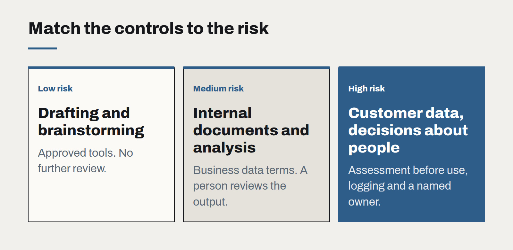

Governing AI use without banning it
Staff are already using AI tools, approved or not. A short, practical policy — backed by tools people actually want to use — protects the business better than a prohibition nobody follows.

In most organisations we visit, the question of whether staff should use AI tools has already been answered by the staff. People are pasting emails into chat assistants to draft replies, summarising reports, translating documents and writing formulas. Some of it is approved. Much of it is not, and a fair amount involves information the business would rather not have sent anywhere.
The instinctive response is a ban. Bans rarely work. The tools are useful, they are one browser tab away, and people who find a faster way to do their job will keep using it quietly. A ban mostly ensures that the business has no visibility of what is happening and no influence over how it is done.
The better approach is governance that makes the safe way the easy way.
A policy people can remember
The most effective AI policies we have helped write fit on one page. They typically cover:
- Approved tools. Which AI services staff may use, under which accounts. Business accounts with appropriate data terms, not personal ones.
- What must never go in. Customer personal information, health or financial details, passwords and credentials, unreleased financial results, anything under a confidentiality agreement — unless the tool has been approved specifically for that data.
- Human responsibility. The person who uses the output owns it. AI-drafted text, code or analysis is checked before it is sent, published or relied on.
- Disclosure. When AI involvement must be disclosed to customers or colleagues, and how.
- Where to ask. A named person or channel for questions, so grey areas get answered rather than guessed.
In New Zealand, the Privacy Act 2020 and its information privacy principles already set obligations for how personal information is collected, used, stored and disclosed. A good AI policy does not invent new rules so much as explain how existing ones apply to a new kind of tool.

Give people something better
Policy alone does not change behaviour; a good alternative does. Provide approved tools that are genuinely useful — business accounts on reputable assistants with data retention controls, or an internal assistant connected to the company's own documents with proper permissions. When the sanctioned option is as convenient as the unsanctioned one, most people switch without being asked.
Match controls to risk
Not every use needs the same scrutiny. We suggest three tiers:
- Low risk: drafting, summarising public material, brainstorming. Approved tools, no further review.
- Medium risk: internal documents, analysis that informs decisions. Approved tools with business data terms, human review of outputs.
- High risk: customer data, automated decisions affecting people, anything published externally without editing. A short assessment before use, logging, and a named owner.
Review it quarterly
AI tools and their terms change quickly. Set a quarterly review of the approved list, the policy wording and any incidents. Ask staff which tools they want and why; the answers are the best guide to what to approve next.
Governance done well is not a brake. It is what lets an organisation adopt useful tools quickly, because everyone knows where the edges are.
Write prompts like specifications
The prompts that hold up in production read less like clever incantations and more like a well-written brief for a new colleague. Treat them as code: versioned, reviewed and tested.
The real cost of an AI feature
The token bill is the smallest line in the budget. Evaluation, review, support and change management are where AI features actually cost money — and where the business case should look first.
Small models, local data
Not every AI task needs the largest model in the world. For privacy-sensitive, high-volume work, a small model you control is often cheaper, faster and easier to defend.